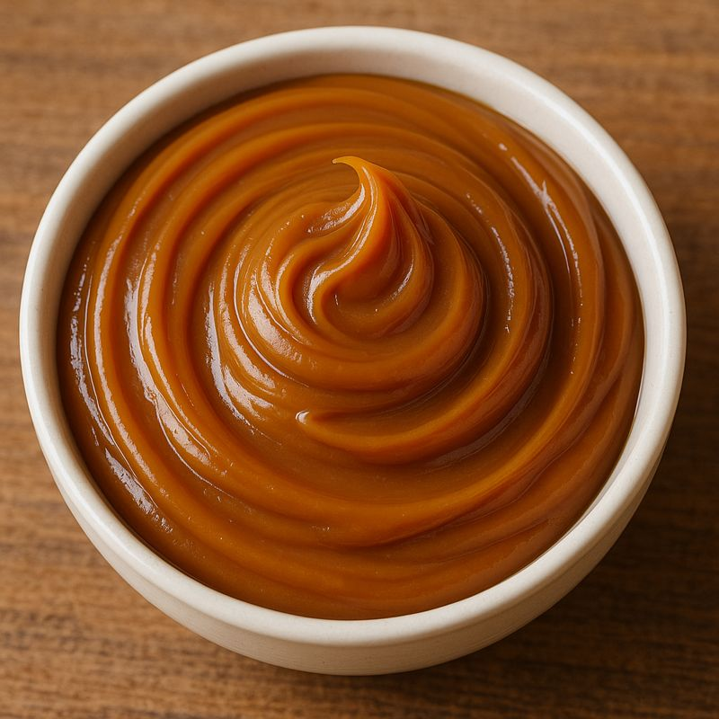

Manjar (Dulce de Leche)

This is one hundred percent Chilean. It is a sort of caramel that can be found everywhere in Chile. Actually, most pastry making in my country has manjar in it. The truth is that one can eat manjar anytime during the day and in many different ways: with bread, cheese, cookies, and my favorite, with meringue. Some of my foreign friends love it, some others hate it, so I guess you must give it a try and judge.
Ingredients
- 1 quart whole milk
- 1 cup white sugar
- ½ teaspoon vanilla extract
- ¼ teaspoon baking soda
Steps
- Bring milk, sugar, and vanilla extract to a boil in a saucepan over high heat. Reduce heat to medium-low, continue cooking, and continuously stirring until milk has thickened and turned a caramel color, about 1 hour or more.
- Stir in baking soda. Continue cooking until caramelized milk has reached a pudding consistency. Pour manjar into a bowl and cool completely in the refrigerator.
Home